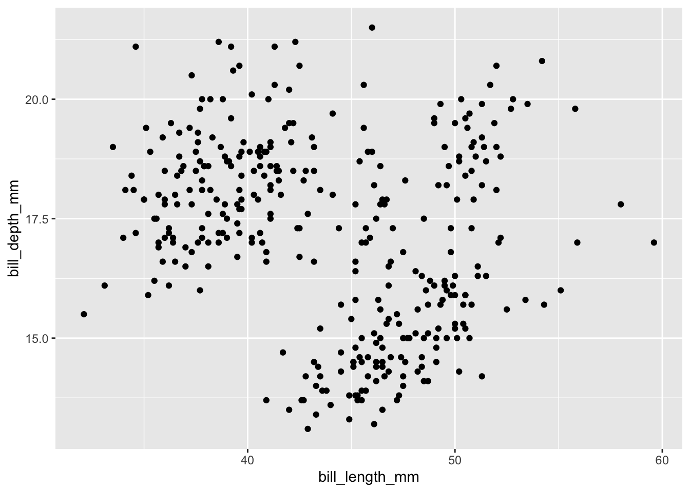
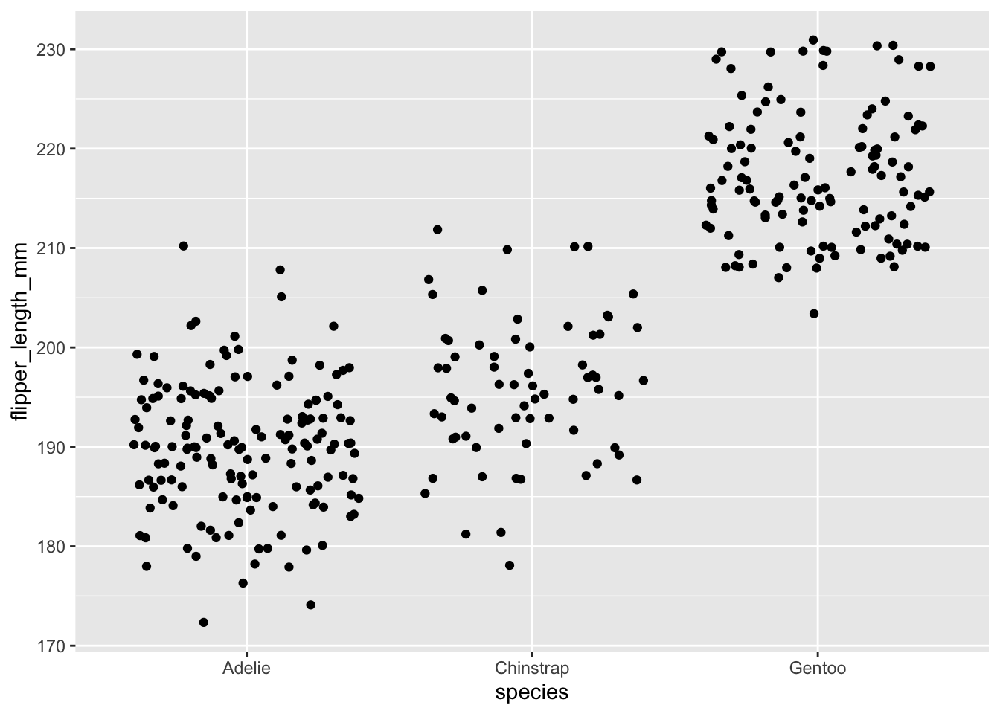
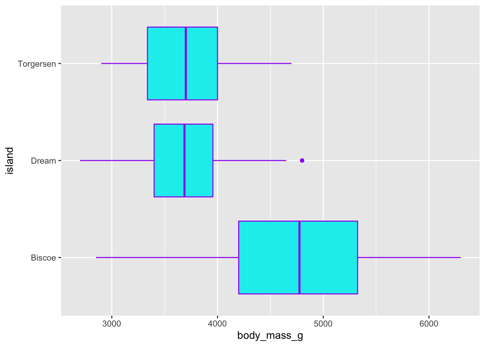
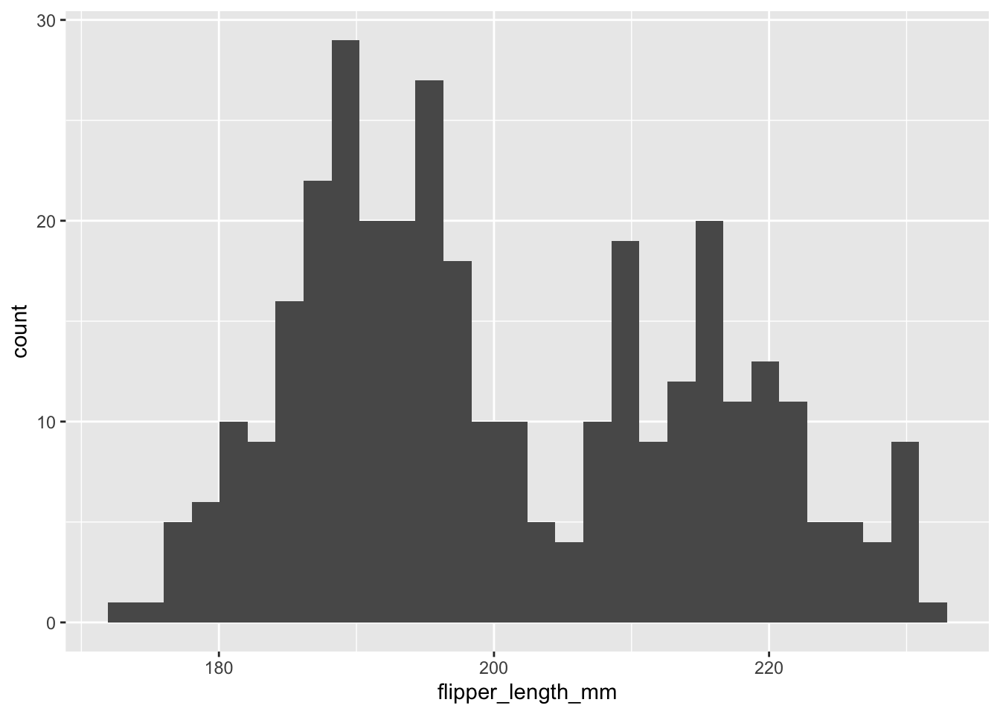
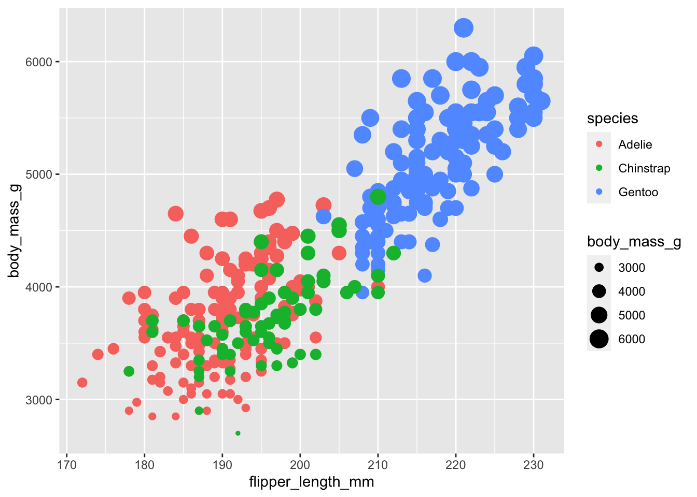
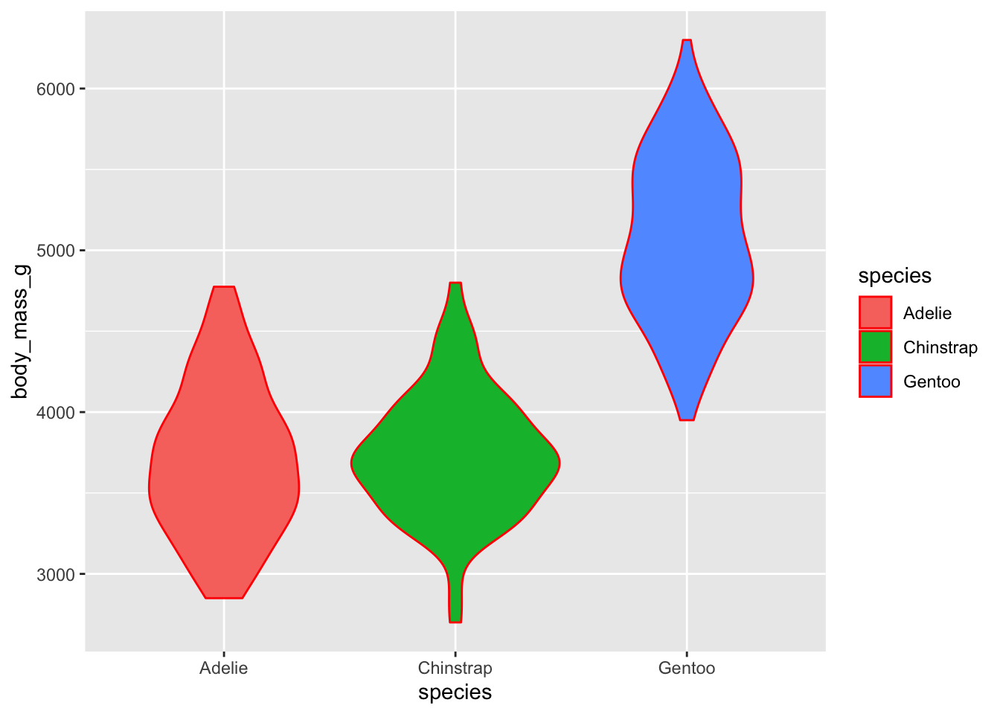

Chapter 12 Data visualization with ggplot2 and seaborn
GET SEABORN WORKING
# import seaborn as snsVisualizing data is a critical skill in every step of data science - from exploratory visualization to look for major patterns, groups or outliers in the data to preparing highly designed infographics for stakeholders, every data scientist must have technical and conceptual skills in data viz.
In this chapter, we’ll learn about two powerful packages for data visualization:
ggplot2: the go-to data visualization package in R (part of the tidyverse)seaborn: one of several popular data viz libraries in Python
12.1 The grammar of graphics
The “gg” in ggplot2 is for the grammar of graphics - a way to describe parts of a graph (Wickham 2010), which in turn provides us an organized and predictable plan to build data visualizations. Understanding the grammar of graphics, and some vocabulary, can help to demystify how we build visualizations with code and the role of some specific functions.
12.2 Basic anatomy of graphs with ggplot2 in R, and seaborn in Python
12.2.1 ggplot2 bare minimum
Making the most basic ggplot requires 3 pieces:
- Tell R you’re making a ggplot graph (
ggplot()) - Tell it what data you’re plotting (including what the x- and/or y-axis variables are)
- Tell it what type of plot you want to make
Note: it is very important to carefully consider the type of data you’re trying to visualize when making a graph. Some visualizations are not appropriate for some types of data. We’ll discuss this a bit more throughout the class, but one of my favorite resources to consider appropriate visualizations based on data type is From Data to Viz.
For example, let’s make a basic scatterplot of bill length versus bill depth from the penguins dataset (in the palmerpenguins package).
ggplot(data = penguins, aes(x = bill_length_mm, y = bill_depth_mm)) +
geom_point()## Warning: Removed 2 rows containing missing values (geom_point). Let’s break down how that code maps onto the three essential pieces of a ggplot graph listed above.
- We use
ggplot()to let R know we’re making a ggplot graph (note: the package name isggplot2, but the function we use is justggplot()). - Within the
ggplot()function, we have two arguments: The first,data = penguins, specifies which object in our environment (in this case, a data frame called penguins) we will get data from for our plot. The second argument,aes(x = bill_length_mm, y = bill_depth_mm), tells us which variables map on to the x- and y-axis aesthetics (hence theaes(), for aesthetics). - We then add a layer (note the
+symbol*) containing the specific geometry, or type of graph we’re trying to make. A standard scatterplot is made withgeom_point().
*Note: A common mistake is using the pipe operator (%>%) between ggplot layers instead of a + sign. Try to remember that we build a ggplot graph by adding layers to it piece by piece (+), not feeding graph pieces into a subsequent layer (which the %>% implies).
Let’s make a few more bare minimum ggplots. For each, ask yourself: how does this example code map onto the three main pieces of a basic ggplot graph listed above?
Example: a jitterplot (geom_jitter()) of flipper length by penguin species.
ggplot(data = penguins, aes(x = species, y = flipper_length_mm)) +
geom_jitter()## Warning: Removed 2 rows containing missing values (geom_point).
Example: A boxplot of penguin body mass by island.
Let’s add some color, too, just for the halibut. Generally:
- Update line and point colors with
color = - Update shape fill colors with
fill =
ggplot(data = penguins, aes(x = body_mass_g, y = island)) +
geom_boxplot(color = "purple", fill = "cyan2")## Warning: Removed 2 rows containing non-finite values (stat_boxplot).
Critical thinking: What might a person unfamiliar with this data conclude if they only saw the boxplot above? Why should this concern us? What critical information is missing that is required for responsible consideration? See also: correlation is not causation, omitted variable bias.
Not all ggplot graph types require two variables. For example, a histogram only wants one numeric variable - it will find the frequencies (plotted on the y-axis) for you. For example, code to make a histogram of penguin flipper lengths is:
ggplot(data = penguins, aes(x = flipper_length_mm)) +
geom_histogram()## `stat_bin()` using `bins = 30`. Pick better value with `binwidth`.## Warning: Removed 2 rows containing non-finite values (stat_bin).
12.2.2 seaborn bare minimum
NOTE TO SELF: I used reticulate::py_install(“seaborn”) while in my project to get seaborn in the right place…
import seaborn as sns12.3 Mapping variables onto graph aesthetics
In the examples above, we specified the x- and/or y- axis variables, but didn’t update any other aesthetics that would indicate groupings or values within the data. For example, we may want to:
- Differ point color by penguin species
- Increase point size by penguin bill depth
- Change the boxplot fill color by island
When we want to change an aesthetic based on variable values (remember: when I say “values” here, that can mean characters like penguin species), we are mapping a variable onto a graph aesthetic. In other words, we are changing an aesthetic of the graph to depend on values within a variable.
12.3.1 Mapped variable aesthetics in ggplot2
We map additional variables onto graph aesthetics with additional aes().
Important: Any time you update a graph aesthetic based on a variable value, it will be within aes(). Any time you update a graph aesthetic based on a constant (e.g. color = "blue"), it should NOT be within aes().
Example: Create a scatterplot of penguin flipper length versus body mass, with color indicating penguin species and with point size changing based on the body mass variable value (using the size element).
ggplot(data = penguins, aes(x = flipper_length_mm, y = body_mass_g)) +
geom_point(aes(color = species, size = body_mass_g))## Warning: Removed 2 rows containing missing values (geom_point). Example: Create a violin plot of body mass by species, with the violin fill color dependent on species and the violin outline color set to “red.”
ggplot(data = penguins, aes(x = species, y = body_mass_g)) +
geom_violin(aes(fill = species), color = "red")## Warning: Removed 2 rows containing non-finite values (stat_ydensity).
12.4 Essential customization
The section above introduces the bare minimum elements needed to create a graph. However, they are far from complete until we update some essential graph elements for clarity.
Those include:
- Update axis labels (include label and units)
- If necessary, add a title
- Change the theme